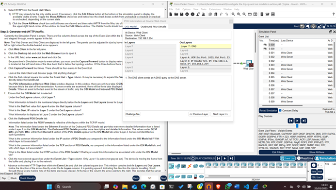
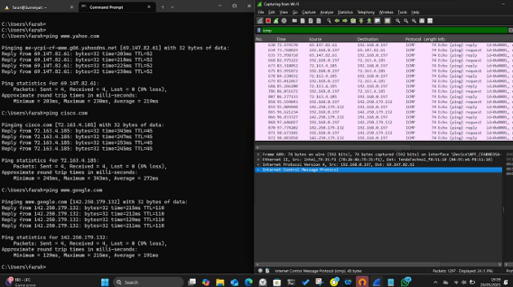
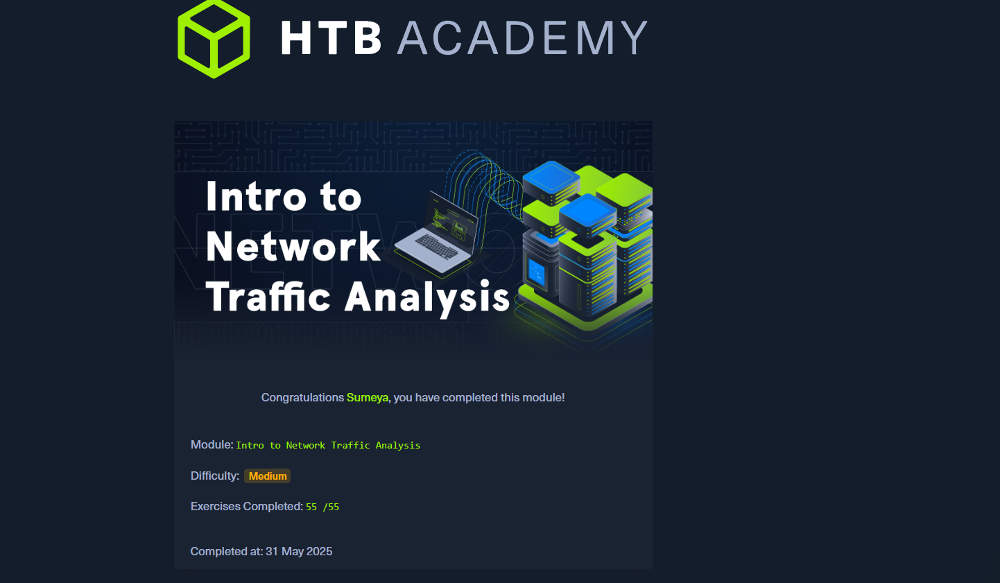
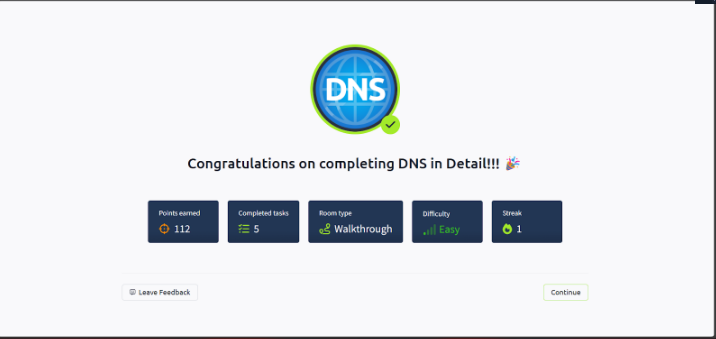
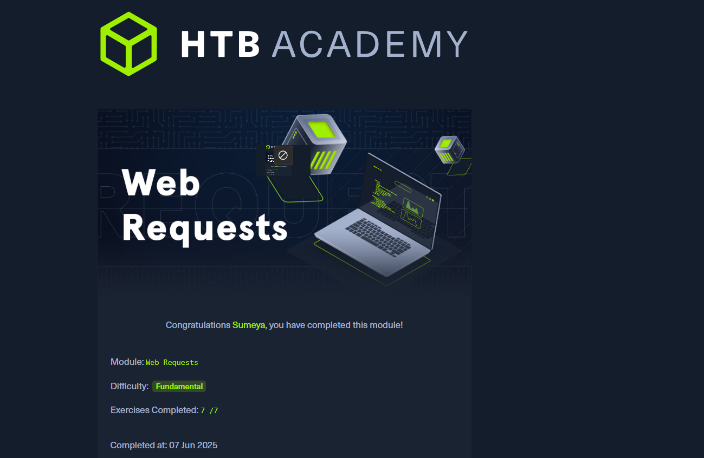

Lab 1: Investigate TCP/IP and OSI Models
Problem: Understand how network protocols function across OSI layers.
Approach: Used Packet Tracer to simulate layered communication.
Tools Used: Cisco Packet Tracer
Lessons: Gained foundational insight into layered protocol design.
Lab 2: Use Wireshark to View Network Traffic
Problem: Capture and interpret ICMP traffic in real-time.
Approach: Sent ping packets to local and remote hosts and analyzed them.
Tools Used: Wireshark
Lessons: Learned traffic analysis basics and header structure.
Lab 3: Intro to Network Traffic Analysis
Problem: Analyze a PCAP file to find anomalies or indicators of compromise.
Approach: Used tcpdump and Wireshark to filter and examine packets.
Tools Used: Wireshark, tcpdump
Lessons: Mastered traffic filtering, protocol dissection.
Lab 4: DNS in Detail
Problem: Understand DNS resolution and record types.
Approach: Queried DNS servers using nslookup to explore A, MX, TXT records.
Tools Used: nslookup, dig
Lessons: Understood DNS record functions and propagation behavior.
Lab 5: Web Requests
Problem: Identify how HTTP/HTTPS requests are made and tracked.
Approach: Used curl and browser dev tools to inspect headers and responses.
Tools Used: curl, Chrome DevTools
Lessons: Learned structure of HTTP requests and status codes.
Lab 6: Build a Switch and Router Network
Problem: Design a secure network connecting multiple switches and a router.
Approach: Configured IP addressing, VLANs, static routing, and trunking.
Tools Used: Cisco Packet Tracer, CLI commands

Lessons: Understood VLANs, router-on-a-stick, and inter-switch routing.